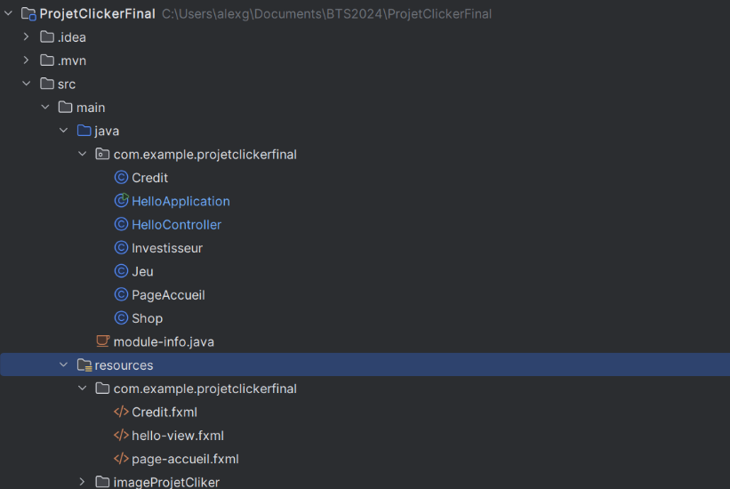
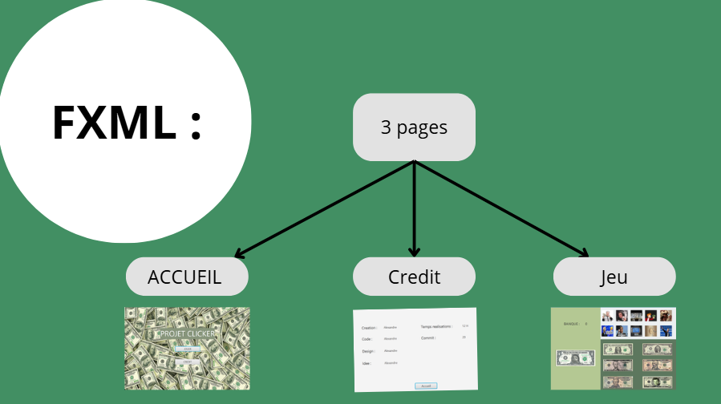
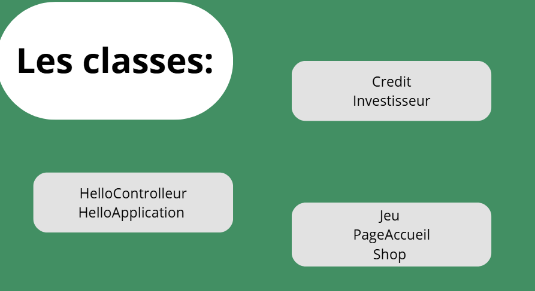

Détails : Projet Clicker

Conception de l'interface
Pour ce projet de fin d'année en BTS SIO, j'ai utilisé SceneBuilder pour concevoir l'interface utilisateur. L'arboraissance du projet est une structure hiérarchique qui organise les éléments graphiques en arbre, facilitant la gestion et la modification de l'interface.

Logique en Java & JavaFX
Le cœur du jeu repose sur la gestion des événements (EventHandlers) en Java. Chaque clic sur le bouton principal déclenche une fonction qui incrémente le compteur. J'ai mis en place un système de rafraîchissement dynamique de l'interface pour que le score se mette à jour instantanément à l'écran, sans latence pour l'utilisateur.

Économie et Améliorations
Un jeu de type clicker n'est rien sans ses "upgrades". J'ai développé une logique permettant d'acheter des multiplicateurs de clics et des revenus passifs (auto-click). Le coût des améliorations augmente de manière exponentielle, obligeant le joueur à faire des choix stratégiques pour optimiser sa progression.
Facilités et difficultés
JavaFX / SceneBuilder
La création visuelle de l'interface grâce au drag-and-drop de SceneBuilder.
La documentation riche et les nombreux tutoriels disponibles en ligne.
Lier correctement les ID du fichier FXML avec les contrôleurs Java.
Gérer les événements de manière fluide pour éviter les bugs d'interface.
Optimiser les performances pour un rendu réactif.
Logique de Jeu
Projet terminé entièrement
Création de plusieurs interfaces
Gestion de Scene Builder
Utilisation de surcharge
Systeme de sauvegarde du jeu
Barre de progression en fonction des cliks effectués
Amélioration du design de l'interface